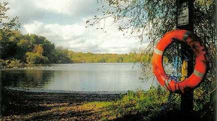
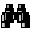
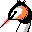
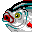
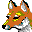
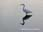

|  |  |
| Home | Recent | Species | Birds | Fish | Mammals | Insects | Fungi | Snaps | Wallpaper | Links | Contact |
These pages are an introduction to Chard Reservoir and its wildlife.
Chard is a small town in Somerset, England, UK. The reservoir is only about a mile from the centre of Chard town and is regularly visited by local people, the surrounding meadows being popular for dog walking. The north and eastern fringes are fished and there is a bird hide at the south end which is positioned well out into the water giving a view of most of the open water. The site is well hidden from all but the closest houses and many shoppers in nearby Chard town may be completely unaware of the existence of this substantial stretch of water. The postcode TA20 1HU should get you to the car park in Oaklands Avenue by sat nav or smart phone.

Looking towards the bird hide: ZOOM in.
My passion is birdwatching, so apologies for the bias towards birds. I'd like to do more on butterflies, plants, fungi.... But for now....
Click below for pages on the wildlife at Chard Reservoir.
    
 Species
Records Bird Records from the past, species by species
Species
Records Bird Records from the past, species by species
Insects
Pretty delicate things
Snaps
Photos around the reservoir
Other Local sites:
- South Somerset C ouncil Chard Reservoir
- Somerset Ornithological Society The county birdwatching society
- South Somerset RSPB Local RSPB group
Some other UK based birding sites:
- Birdguides Videos, books, rare birds etc
Contact for this website:
Click here to email me: kevbirder@gmail.com
All drawings, photos and bird icons on this website are by Kevin Harris
unless otherwise stated. The species by species section contains paintings
by Baz Stevens and photos and illustrations by Kev Ilsley from the now
defunct Tit'n'Grebe website, plus additional photos provided by Tony Keene,
Bob Hastie and Rosemary Ottery. Thanks to you all.
Regularly updated website started as a Millenium project in January 2000
Home page updated April 2024© Kevin Harris